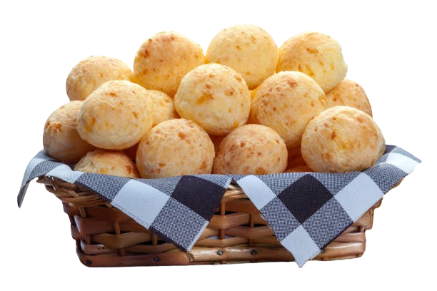

Pão de Queijo do Seu João
O sabor mineiro que derrete na boca!
Aqui você encontra o verdadeiro sabor mineiro. Nosso carro-chefe é o tradicional pão de queijo, feito com ingredientes frescos e receita de família. Perfeito para acompanhar um café ou matar aquela vontade de um lanche gostoso e quentinho!
Temos diversos tipos de pao de queijo como o:
- Pão de Queijo tradicional
- Pão de Queijo recheado com goiabada
- Pão de Queijo com queijo da serra da canastra
- Pacote com 10 unidades congeladas